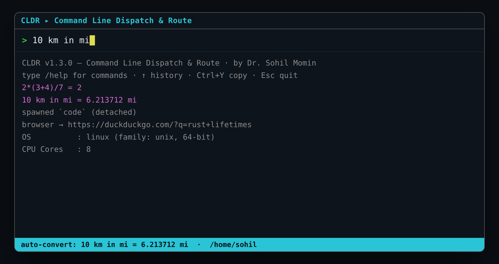
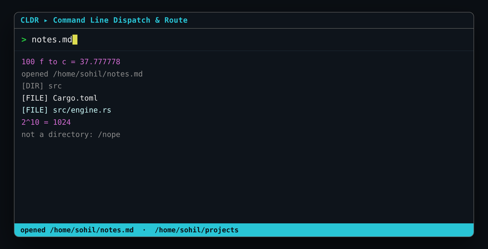
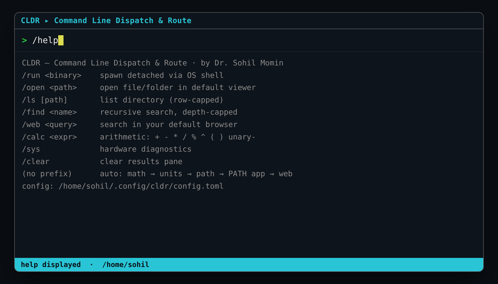

Tray-resident, one keystroke
Lives in the background; the shortcut summons the existing window instead of opening a duplicate.
Rust · Single Binary · Windows + Linux
A single tiny binary that sits in your tray, pops up on a keystroke, and runs whatever you type — a sum, a path, an app, a search.
no Electron · no Qt/GTK · no async runtime · no clipboard access

> 2*(3+4)/7 → [CALC] = 2 > 10 km in mi → [CALC] = 6.213712 mi > notes.md → [OK] opened /home/you/notes.md > code → [RUN] spawned `code` (detached) > rust lifetimes → [WEB] browser → duckduckgo.com/?q=rust+lifetimes
One keystroke summons the window. Type, and CLDR routes it — math → units → path → PATH binary → web search.
Capabilities
Everything below is drawn from the project's own README and source. Four crates total; nothing to install at runtime.
Lives in the background; the shortcut summons the existing window instead of opening a duplicate.
math → unit conversion → existing path → PATH binary → web search. No prefix needed.
+ - * / % ^ ( ) with unary minus, right-associative power, and div/mod-by-zero guards.
10 km in mi, 100 f to c, 5kg to lb — length, mass and temperature.
/run /open /ls /find /web /calc /sys /help /clear.
Ctrl+Y copies the last result via OSC 52 — and it works over SSH.
~/.config/cldr/config.toml — search engine, caps, and aliases like alias.g = /web.
↑/↓ or Ctrl+P/Ctrl+N, persisted between runs.
No clipboard, no telemetry, no network daemon — the only socket is loopback-only, for summon.
How it works
Three cooperating pieces: an interactive command window, a background tray resident, and a detached dispatch daemon. You normally only touch the first.
Grab a prebuilt archive from Releases, or compile from source with Cargo. One binary comes out.
Run cldr to open the window. Press your hotkey and CLDR raises the existing window, not a new one.
Anything without a leading / is auto-routed through the cascade; a leading slash picks a command.
# clone, build, test git clone https://github.com/drsamonline/CLDR && cd CLDR cargo build --release # → target/release/cldr(.exe) cargo test # engine + IPC + extras unit tests cargo run -- --self-test # 14 headless checks (exit 0 = pass)
No system libraries, no C toolchain beyond what Rust already needs.
# portable: extract & run tar -xzf cldr-linux-x86_64.tar.gz ./cldr-linux-x86_64/cldr --summon # installer: ~/.local/bin + menu entry + tray autostart ./install.sh
Expand-Archive cldr-windows-x86_64.zip -DestinationPath $env:LOCALAPPDATA\cldr & "$env:LOCALAPPDATA\cldr\cldr.exe" --summon
Unit conversion understands length (mm cm m km in ft yd mi nmi),
mass (mg g kg oz lb st t) and temperature (c f k), and accepts long names such as
10 kilometres in miles.
Reference
| Command | Description |
|---|---|
| /run <binary> | spawn detached via the OS shell |
| /open <path> | open a file/folder in the default viewer |
| /ls [path] | list a directory (row-capped) |
| /find <name> | recursive search (depth-capped) |
| /web <query> | search in your default browser |
| /calc <expr> | arithmetic + - * / % ^ ( ) unary- |
| /sys | hardware diagnostics |
| /help · /clear | cheat sheet · clear pane |
| (no prefix) | auto: math → units → path → PATH app → web |
| Key | Action |
|---|---|
| Enter | submit |
| ↑ ↓ | history (empty input) / scroll results |
| Ctrl+P Ctrl+N | history prev / next |
| PgUp PgDn Home End | scroll results |
| Ctrl+Y | copy last result (OSC 52) |
| Ctrl+L | clear pane |
| Del | clear input |
| Esc / Ctrl+C | quit |
Terminal output
Real captures from the repository's own screenshots folder — the command window is a compact terminal UI.


/open, /ls, powers.
/help — the in-window cheat sheet.Get started
Every release ships a SHA256SUMS.txt and SLSA build provenance.
| Platform | Portable | Installer |
|---|---|---|
| Windows 10/11 x64 | cldr-windows-x86_64.zip | cldr-<ver>-setup.exe |
| Linux x86_64 | cldr-linux-x86_64.tar.gz | ./install.sh |
| Linux ARM64 (Pi 4/5) | cldr-linux-aarch64.tar.gz | ./install.sh |
panic=abort.poll() when idle; no async runtime.The terminal is the smallest possible GUI here — on Windows the console is auto-shrunk to a compact ~92×26 box; on Linux your terminal emulator sizes it.
Questions
It's a single-binary command launcher for Windows and Linux. Bind it to a shortcut or global hotkey; it stays resident in the background and summons its command window when you press the key. Type anything and CLDR routes it to the right action instantly, showing the result inline.
No. Prebuilt archives for Windows x64, Linux x86_64 and Linux ARM64 (Pi 4/5) are published on the Releases page, and a Windows installer plus a Linux install.sh are provided. Rust is only needed if you build from source.
No. CLDR never reads or writes the clipboard, sends no telemetry, and has no network daemon. Copying a result uses OSC 52 escape sequences instead of a clipboard crate, so it even works over SSH. The only socket is a loopback-only control channel used to summon the window.
A native toolkit (winit/egui/Qt) would add tens of megabytes of dependencies and binary size. The terminal is the smallest possible GUI here — on Windows the console is auto-shrunk to a compact box; on Linux your terminal emulator sizes it.
Run cldr --config to write a commented starter file to ~/.config/cldr/config.toml (Linux) or %APPDATA%\cldr\config.toml (Windows). Everything is optional — set search_url, max_results, find_depth, and aliases like alias.g = /web.
Each release includes a SHA256SUMS.txt and SLSA build provenance, generated automatically by the tag-driven release workflow. Releases are cut with git tag v1.3.0 && git push origin v1.3.0.
PolyForm Noncommercial licensed with a mandatory attribution clause. Every source, doc, script and asset carries an embedded watermark, and any copy must retain the author's name — removing watermarks terminates the license grant.
Download
Windows installer · 2.3 MBLinux · 446 KBLinux (ARM64) · 425 KB
From the latest release · free · no account, no telemetry.